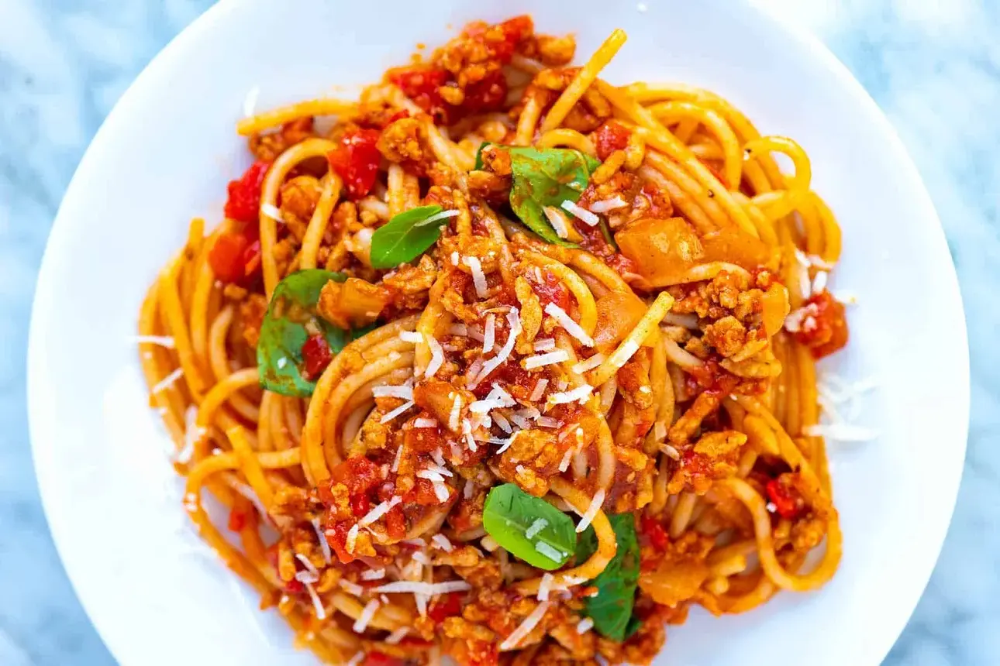

Spaghetti with Ground Beef

When it comes to recipes with pasta, there is nothing better than spaghetti.
In this recipe I will show you how to make a delicious, homemade spaghetti with ground beef.
Duration
~1 hour
Ingredients
- 1 pound ground beef
- 1 medium onion, chopped
- 4 cloves garlic, minced
- 1 small green bell pepper, diced
- 1 (28 ounce) can diced tomatoes
- 1 (16 ounce) can tomato sauce
- 1 (6 ounce) can tomato paste
- 2 teaspoons dried oregano
- 2 teaspoons dried basil
- 1 teaspoon salt
- 1/2 teaspoon ground black pepper
- 1 pound spaghetti noodles
Steps
- Gather all ingredients
- Combine ground beef, onion, garlic, and green pepper in a large saucepan over medium-high heat.
Cook and stir until meat is browned and crumbly and vegetables are tender, 5 to 7 minutes.
Drain grease.
- Stir diced tomatoes, tomato sauce, and tomato paste into the pan. Season with oregano, basil, salt,
and pepper. Simmer spaghetti sauce for 1 hour, stirring occasionally.
- A few minutes before the hour is done, cook box of spaghetti noodles as directed on package.
- Serve and enjoy your meal!